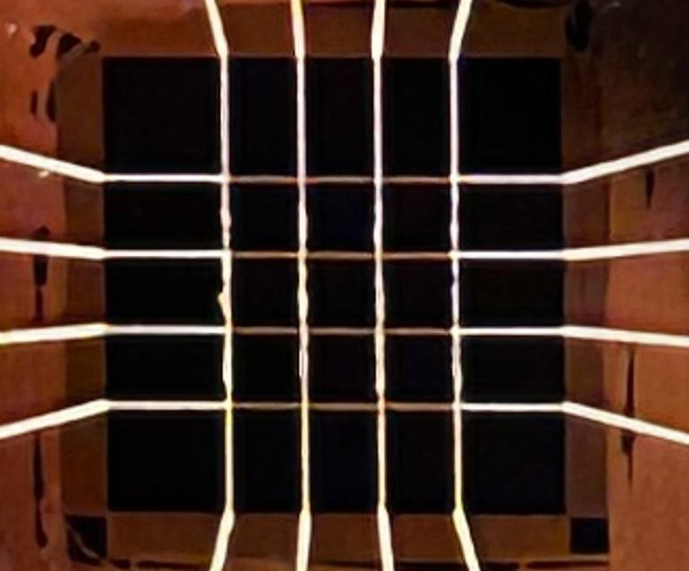
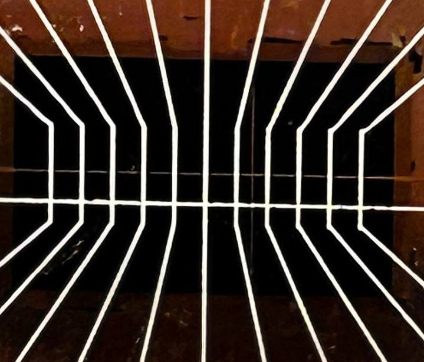

Матричные детекторы

Описание: Матричные детекторы обеспечивают возможность получения изображения с высоким разрешением, подходящим для различных применений в медицинской диагностике.
Характеристики:
- Высокая чувствительность
- Низкий уровень шума на уровне 1 пА
- Быстродействие 50 нс
- Размер пикселя от 50 мкм
Стоимость: По запросу.
Линейные детекторы

Описание: Линейные детекторы обеспечивают точное изображение, идеально подходят для области промышленного контроля и безопасности.
Характеристики:
- Высокая чувствительность
- Низкий уровень шума на уровне 1 нА
- Быстродействие 500 нс
- Размер пикселя от 70 мкм
Стоимость: По запросу.
Дополнительная информация
Для получения дополнительной информации или коммерческого предложения, пожалуйста, свяжитесь с нами по адресу m1807567@edu.misis.ru.